3. When the Bill To is blocked
Left to right: an invoiced work order, a work order holding a deposit, a Bill To on Credit Hold, Counter Sale, then phone. Before: production v26.45.2.1. After: the locked Bill To build. For the Credit Hold row, Valders was put on Credit Hold on both stacks for the shots and set back to COD after. After the tech review: clicking or tapping a locked Bill To shows its message as an error toast for anyone who can see the field; the button in the toast ("Open Deposits" or "Go To Invoice") shows only for users allowed to use it; history mode shows no lock message. The deposit row and the mary.moore row were reshot on the build after the review.
Invoiced (S2-17581, Buda billed to Valders, Paid)
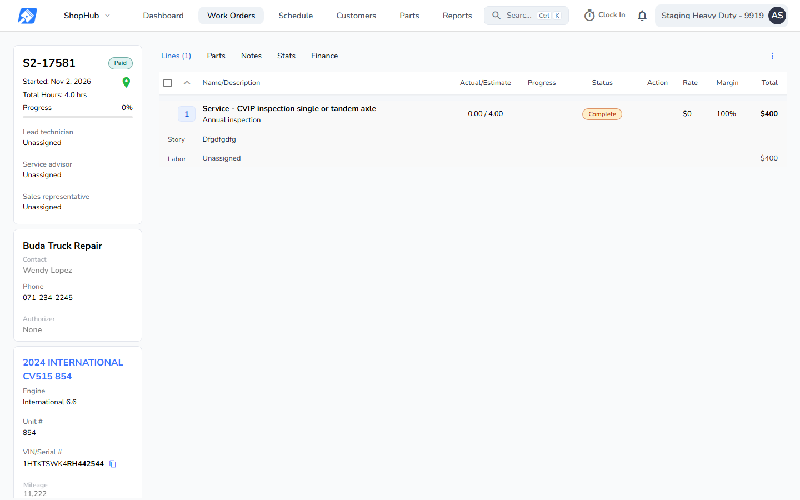
- No Bill To on the card.
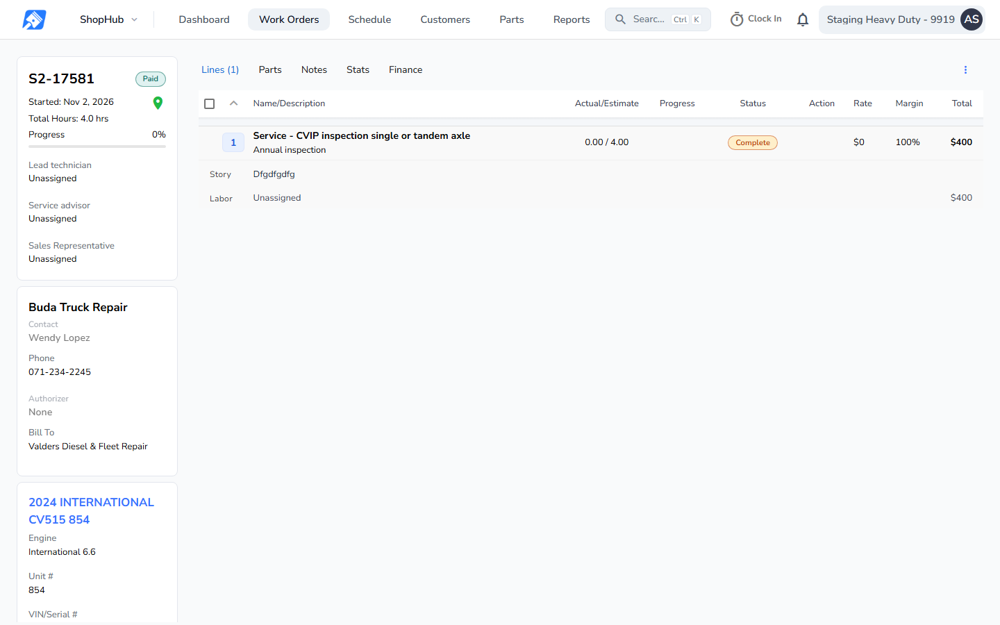
- "Bill To" "Valders Diesel & Fleet Repair", read-only.
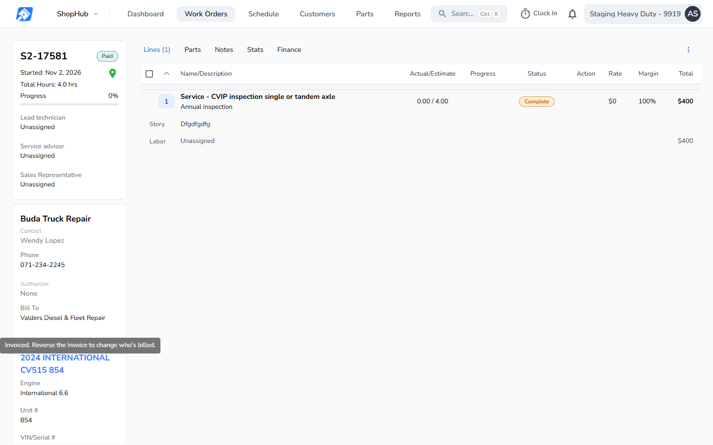
- Tooltip: "Invoiced. Reverse the invoice to change who's billed."
- No tooltip and no toast in history mode.
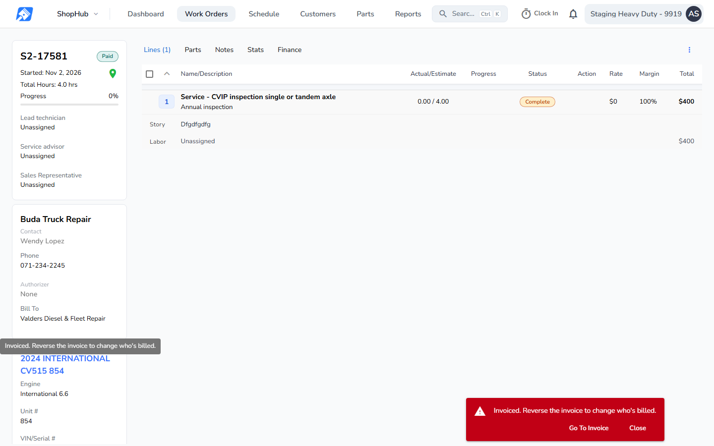
- Error toast with the same words and "Go To Invoice" and "Close". "Go To Invoice" opens the Finance tab; it never reverses anything.
- Anyone who can see the field gets the toast. "Go To Invoice" shows only for users who can open the Finance tab; others get the message and "Close" only.
- Rechecked after the tech review: pixel-identical to the earlier shot, so not replaced.
Deposit held (S2-17577, Desert Edge billed to 7 Star, $10.00 deposit)

- No Bill To on the card. The "Over Limit" pill is production's credit check; not Bill To.
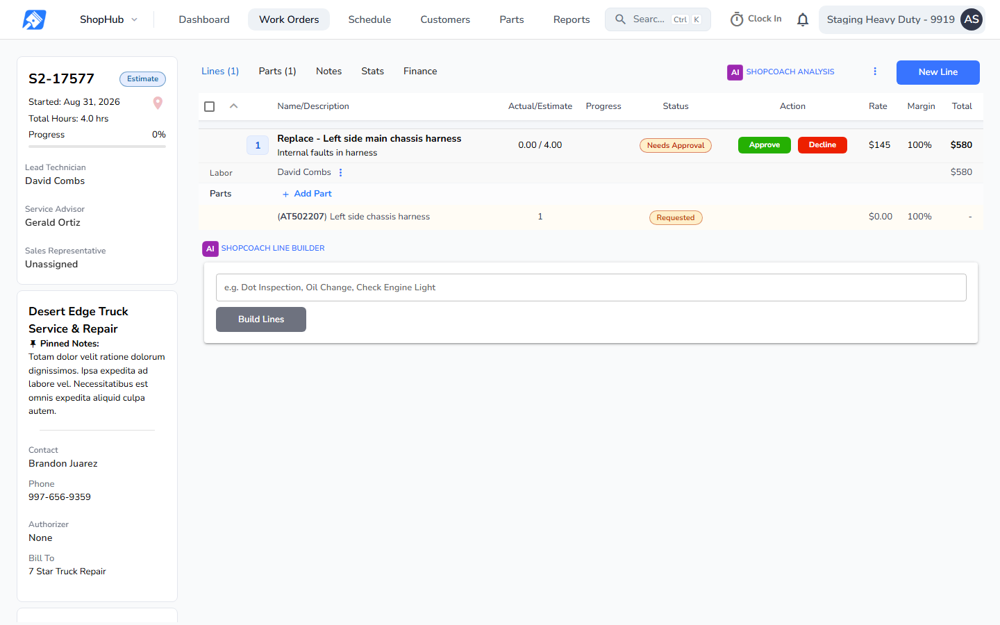
- "Bill To" "7 Star Truck Repair", read-only while the deposit is held.
- The Change Customer button (two arrows at the top right of the customer card) stays enabled. The server refuses Change Customer only when it would change the Bill To.
- Reshot after the tech review.
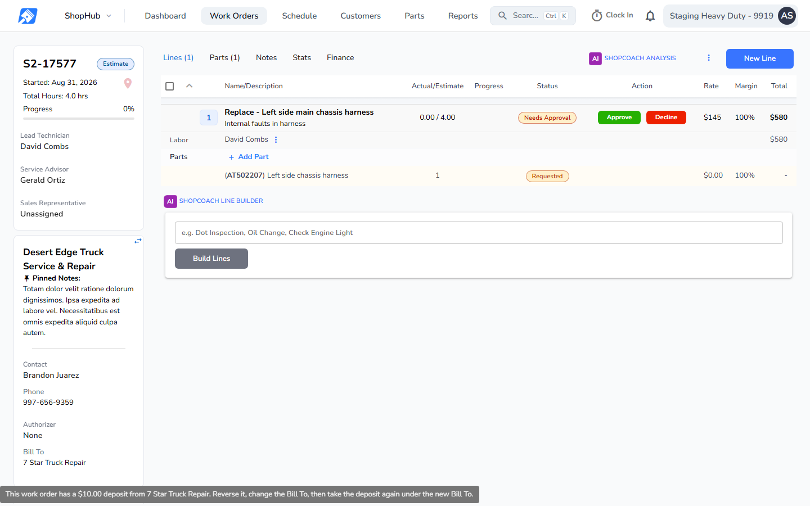
- Tooltip: "This work order has a $10.00 deposit from 7 Star Truck Repair. Reverse it, change the Bill To, then take the deposit again under the new Bill To."
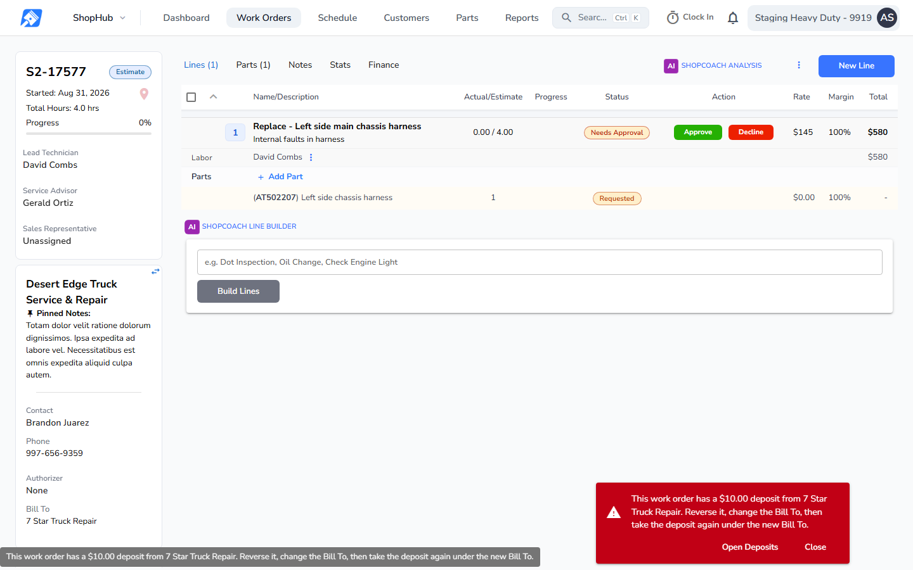
- Error toast with the same words, "Open Deposits" and "Close". "Open Deposits" opens the Deposits tab of the customer holding the largest share.
- Shot as admin, who can open Deposits. The hover tooltip also shows at the bottom left because the pointer is still on the field. Reshot after the tech review.
Deposit held, a user without "View and Manage AP/AR Data" (mary.moore, Foreman, S2-17577)
- The same production board as the row above: production has no Bill To, so there is nothing to tap. No production board was shot as mary.moore for this work order.
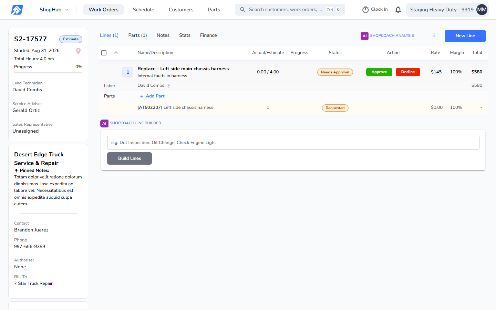
- She sees "Bill To" "7 Star Truck Repair" because someone else pays.
- Accuracy check: the top bar shows her role's menu (no Dashboard, no Reports, a wider search box) and "Staging Heavy Duty - 9919". Her only location is Staging Lethbridge - 4310, so for these shots her staff location was moved to Staging Heavy Duty - 9919 and moved back after. Not Bill To.
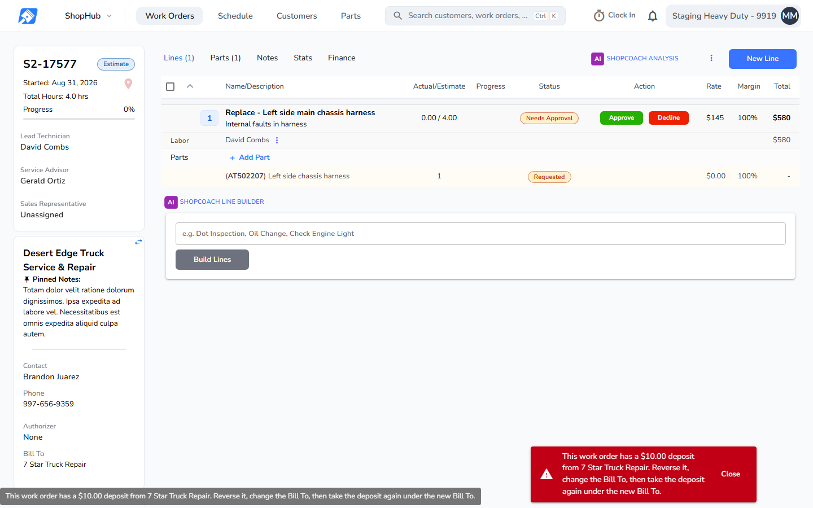
- Error toast: "This work order has a $10.00 deposit from 7 Star Truck Repair. Reverse it, change the Bill To, then take the deposit again under the new Bill To." with "Close" only.
- No "Open Deposits": she cannot open a customer's Deposits tab. The tooltip with the same words shows at the bottom left because the pointer is still on the field.
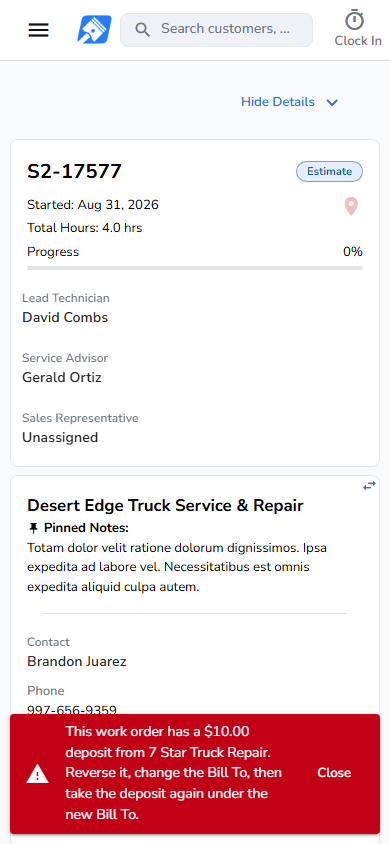
- Details open, the Bill To field tapped (it sits below the fold, under the toast). The same toast, "Close" only. A tap never depends on a hover.
Bill To on Credit Hold (S2-17579, Buda billed to Valders)
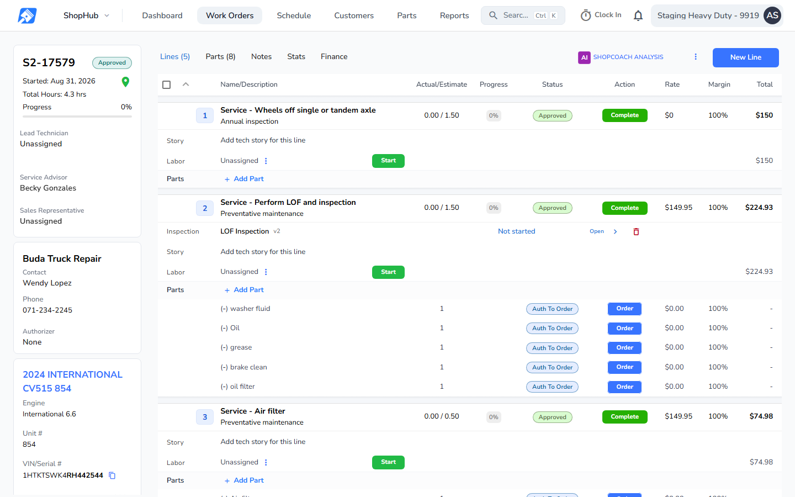
- Production checks only Buda, which is on COD, so no banner.
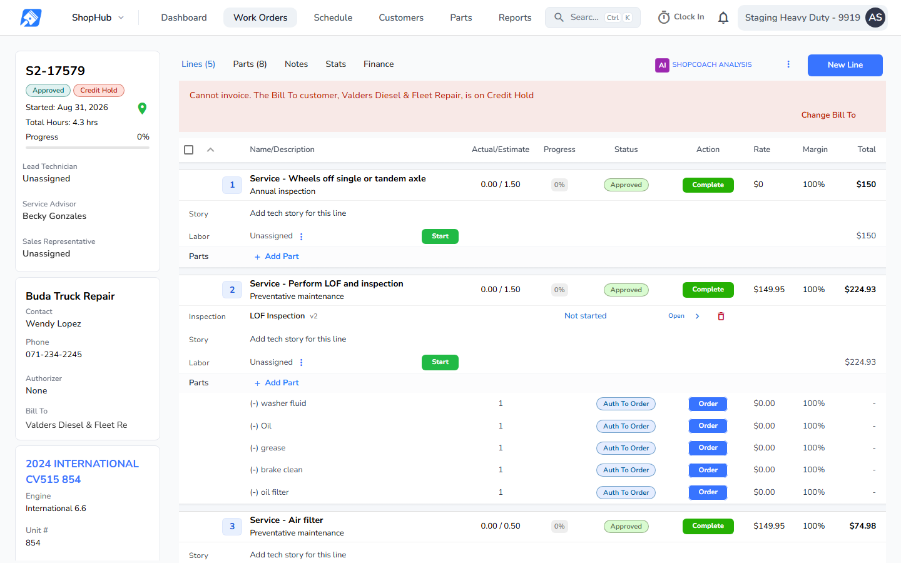
- Banner: "Cannot invoice. The Bill To customer, Valders Diesel & Fleet Repair, is on Credit Hold", with "Change Bill To".
- The work order header shows a "Credit Hold" pill.
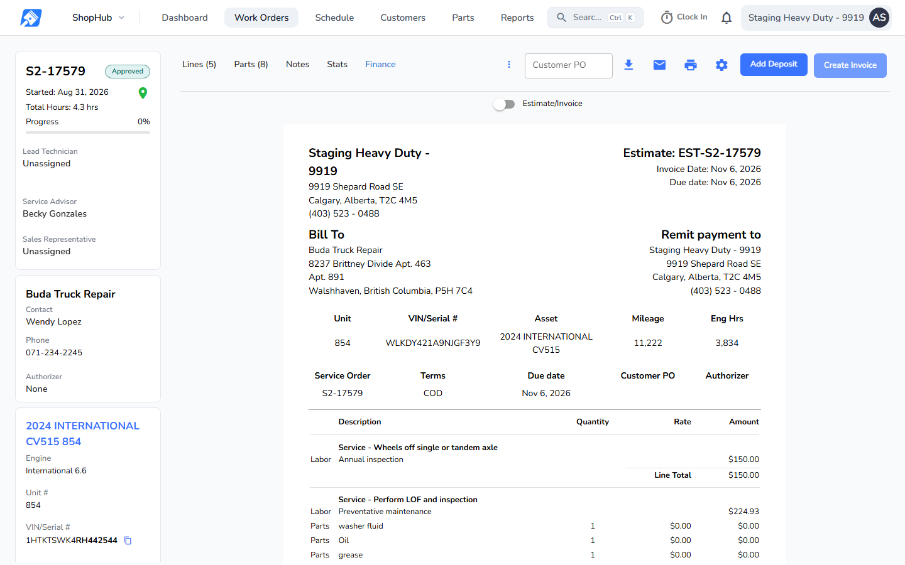
- No banner. Create Invoice is greyed here only because no line is complete yet.
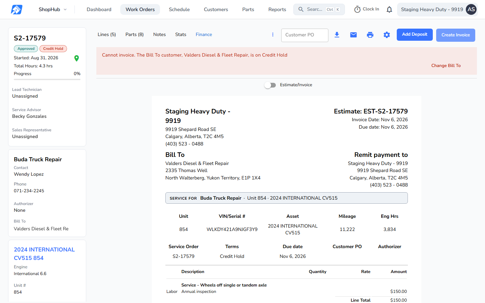
- The same banner on Finance. Create Invoice is greyed here because no line is complete; the Credit Hold tooltip on it was not shot.
- The toolbar (Customer PO, icons, Add Deposit, Create Invoice) sits where it does in production.
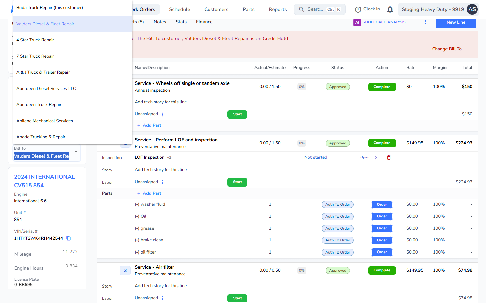
- "Change Bill To" opens and focuses the card's Bill To field, so the page scrolls to it.
- The list: "Buda Truck Repair (this customer)" first, then the current Bill To "Valders Diesel & Fleet Repair" highlighted, then customers A to Z ("4 Star Truck Repair", "7 Star Truck Repair", "A & J Truck & Trailer Repair"). Reshot after the tech review.
Counter Sale is never offered, and phone
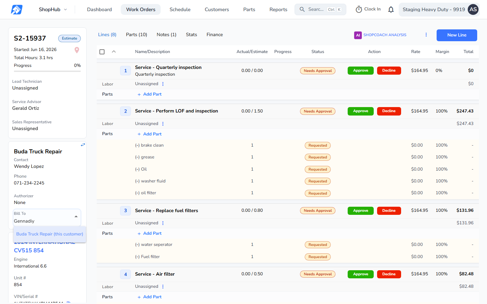
- In this data the Counter Sale customer is named "Gennadiy's Mobile Truck Repair". Typing "Gennadiy" in Bill To leaves only "Buda Truck Repair (this customer)".
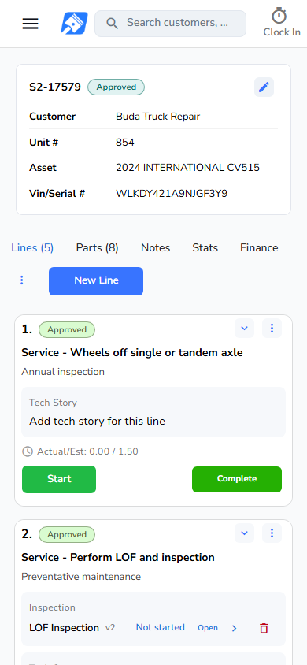
- No banner.
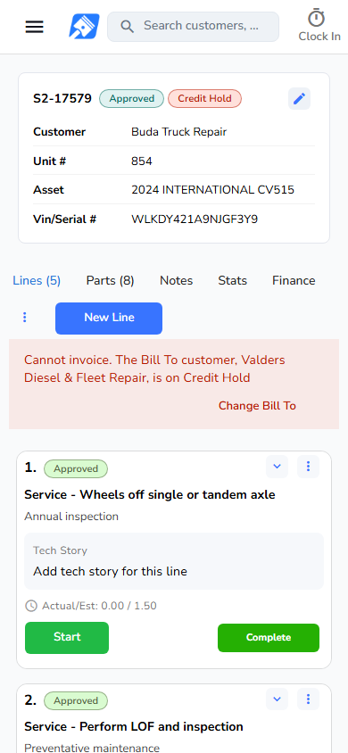
- The "Credit Hold" pill shows in the phone header, and the banner "Cannot invoice. The Bill To customer, Valders Diesel & Fleet Repair, is on Credit Hold" with "Change Bill To" sits above the lines.
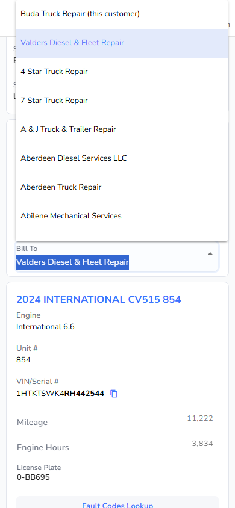
- Tapping "Change Bill To" opens the phone Details, scrolls to the Bill To field and opens its list: "Buda Truck Repair (this customer)", "Valders Diesel & Fleet Repair" highlighted, then customers A to Z.
- New after the tech review (it used to target the card hidden behind Details, so nothing visible happened). Closed without saving.